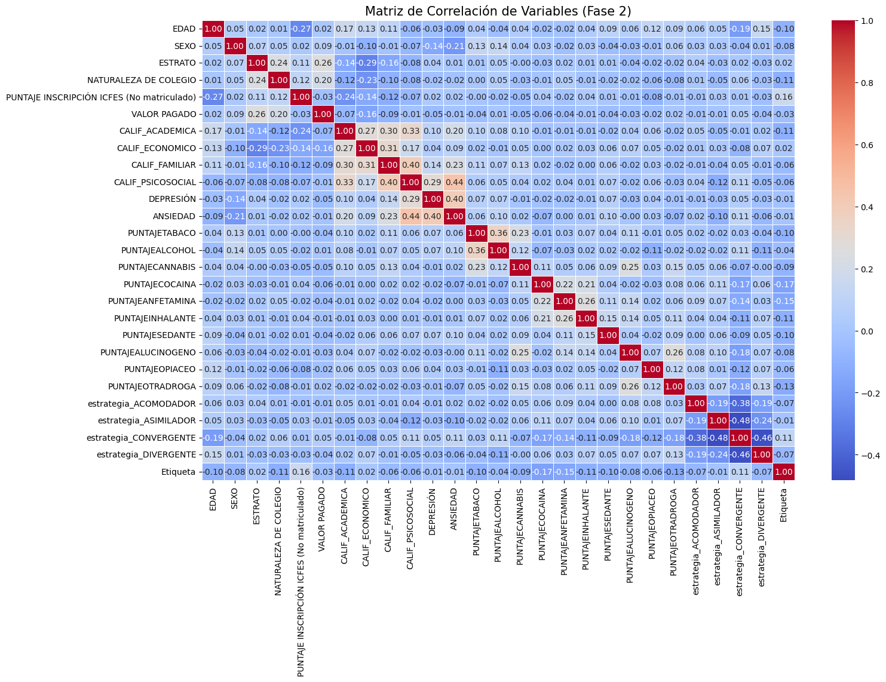
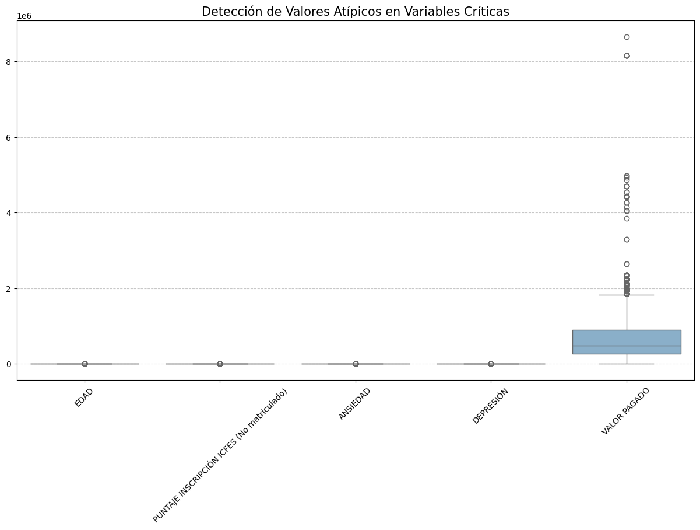
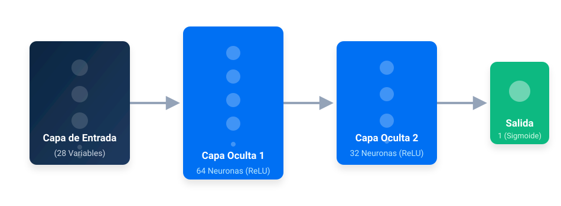
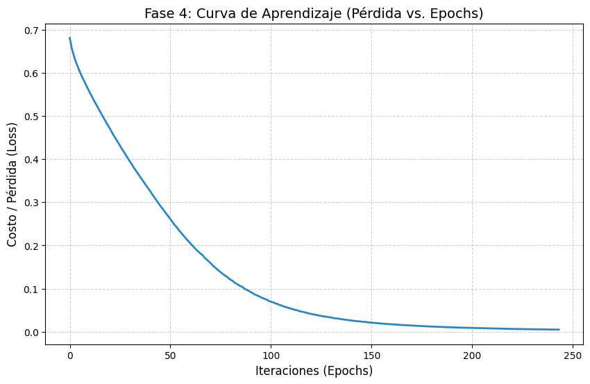
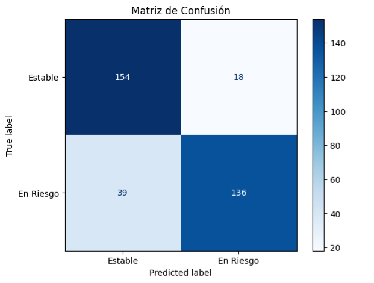
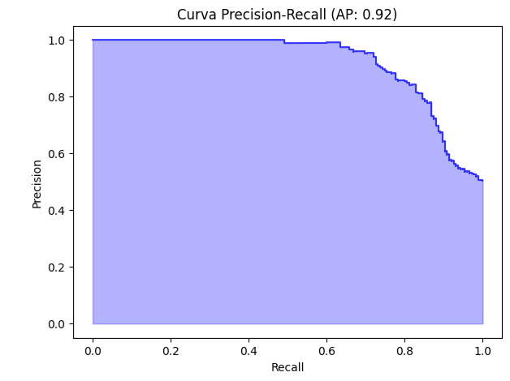

Implementación de Inteligencia Predictiva Universitaria mediante Perceptrón Multicapa (MLP) basado en la metodología CRISP-ML.
Tasa de deserción detectada en el primer ciclo académico.
Registros estudiantiles originales procesados.
Variables distribuidas en 4 dimensiones críticas de análisis.
Desbalance inicial: 75% permanencia vs 25% riesgo.
El proyecto aborda la problemática como una clasificación binaria para categorizar a los estudiantes en "En Riesgo" o "Sin Riesgo".

Evidencia relaciones significativas entre la etiqueta de deserción y variables psicosociales (Ansiedad) y académicas.

Gráfico de cajas detectando perfiles extremos en variables como 'Valor Pagado' (hasta 8.6 millones), justificando la normalización.
Para asegurar que la Red Neuronal converja correctamente y no se sesgue, se aplicó un pipeline de transformación:
Resultado de Fase 3: Datos 100% íntegros, normalizados y balanceados (Total: 1,732 registros listos para el entrenamiento).
Se implementó un modelo MLPClassifier debido a que el riesgo de abandono involucra variables que no son linealmente separables.
El entrenamiento se realizó con el 80% del dataset balanceado. El modelo alcanzó la convergencia de manera orgánica y estable.

Esquema de las capas ocultas y flujo de datos configurados para el SAT.

Muestra el descenso de la función de pérdida. El modelo logró estabilidad en 244 iteraciones con una pérdida final de 0.0050.
La métrica de Exactitud (Accuracy) es engañosa en contextos desbalanceados, por lo que el modelo fue evaluado en base a su capacidad real de detectar riesgo.
Como se observa en las gráficas adjuntas, el modelo cumple con el objetivo institucional fundamental: evitar a toda costa la omisión de estudiantes vulnerables.

Tablero de aciertos: De 175 casos reales de riesgo, el sistema detectó 171. Solo 4 falsos negativos.

Con un Área (AP) de 0.93, demuestra una gran robustez incluso al exigirle detectar el 100% de los casos (Recall 1.0).
El modelo se ha integrado a una interfaz en Streamlit. Cuando la red neuronal emite una probabilidad P > 0.7 (Riesgo Muy Alto), se desencadena el siguiente protocolo:
Para mitigar la degradación del modelo por Data Drift (cambios en el perfil de ingreso), se establece un re-entrenamiento semestral obligatorio y monitoreo constante a través del Dashboard central.